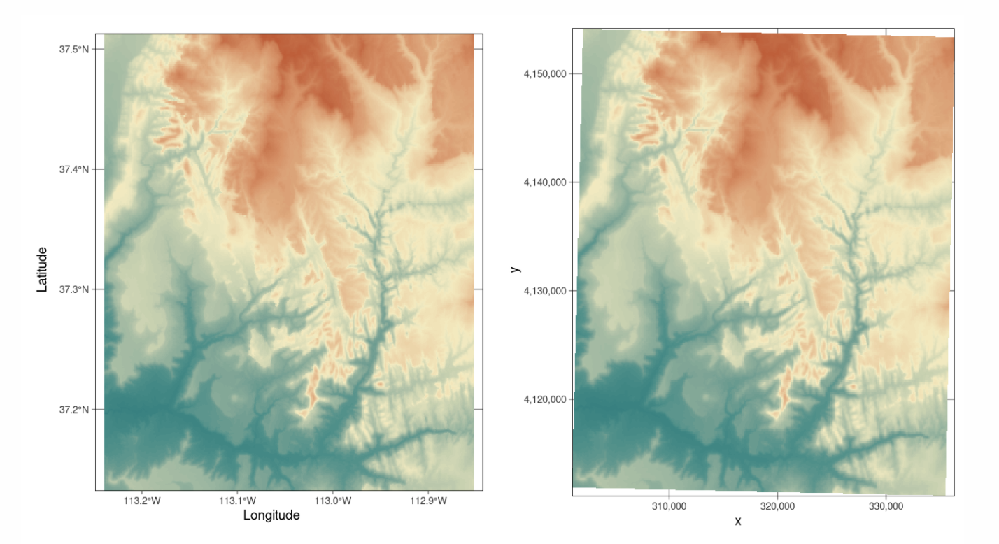
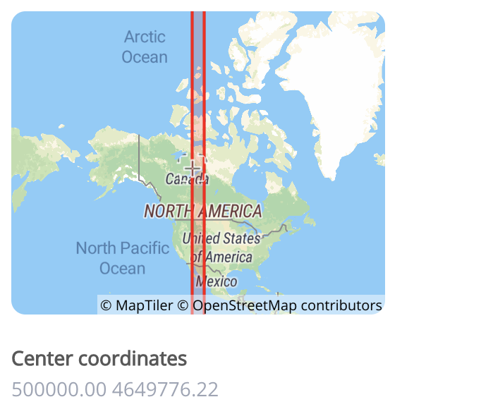

1 Spatial data
1.1 Example datasets
Throughout this tutorial, I will be using a dataset of medical clinics. You are welcome to download it yourself if you want to follow along by clicking here.
- Medical clinics: MedicalClinics.xlsx
- Population Density: medical_population.gpkg
- Broadband: medical_broadband.zip
1.2 Useful tutorials
- https://ourcodingclub.github.io/tutorials/spatial-vector-sf/
- https://github.com/rstudio/cheatsheets/blob/main/sf.pdf
- https://learning.nceas.ucsb.edu/2020-02-RRCourse/spatial-vector-analysis-using-sf.html
1.3 Spatial data basics
Geographical data needs special treatment. As well as standard data analysis, we need to tell R that our data has a spatial location on the Earth’s surface. R needs to understand what units our spatial location is in (e.g. metres, degrees..) and how we want the data to appear on plots and maps. R also needs to understand the different types of vector data (e.g. what we mean by a “polygon” or “point”).
To achieve this there are some specialist types of data we need to use and several spatial data packages.
Vector data mostly uses the
sfpackage. Each object (row) is represented as a spatial object (a point, line or polygon). For example the locations of trees might be represented as points, a road network as lines, and building footprints as polygons.Raster data mostly uses the
terrapackage The spatial domain is divided into a grid of equally sized cells. These are useful for storing field data that varies continuously over space, such as a satellite image, temperature or an elevation surface.
We’re going to split this tutorial by vector and raster (field) data
1.3.1 Map projections
See here for a great overview: https://source.opennews.org/articles/choosing-right-map-projection/
At its simplest, think of our map projections as the “units” of the x-y-z coordinates of geographic data. For example, here is the same map, but in two different projections.
On the left, the figure is in latitiude/longitude in units of degrees. LOOK AT THE UNITS ON THE AXIS!
On the right the same map is in UTM.

(#fig:Tut11Fig1)Examples of geographic coordinate systems for raster data (WGS 84; left, in Lon/Lat degrees) and projected (NAD83 / UTM zone 12N; right, in metres), figure from https://geocompr.robinlovelace.net/spatial-class.html
1.3.1.1 The UTM system
In the UTM system, the Earth is divided into 60 zones. Northing values are given by the metres north, or south (in the southern hemisphere) of the equator. Easting values are established as the number of metres from the central meridian of a zone. You can see the UTM zone here

(#fig:Tut11Fig2)Zone 12N: https://epsg.io/32612
1.3.1.2 EPSG codes
Each map projection has a unique numeric code called an EPSG code. To find them, I tend to use these resources, but in this course I will try to provide the codes
- https://epsg.io
- https://mangomap.com/robertyoung/maps/69585/what-utm-zone-am-i-in-
- ChatGPT and similar
R is stupid. It has no idea what units or projection your coordinates are in until you tell it
1.4 Vector Data
1.4.1 How to make existing data “spatial” (st_as_sf)
The sf package is designed to deal with vector data, but you need to convert your data into sf format before its commands will work. Lets read in some non spatial data. These are medical clinics near the LA/MI border.
## # A tibble: 6 × 4
## Longggitude latitudE Name Description
## <dbl> <dbl> <chr> <chr>
## 1 -91.2 32.4 Madison Parish Hospital Hospital
## 2 -91.4 32.9 West Carroll Memorial Hospital Hospital
## 3 -91.3 33.3 Chicot Memorial Medical Center Hospital
## 4 -91.9 32.8 Morehouse General Hospital Hospital
## 5 -90.8 32.4 Merit Health River Region Hospital
## 6 -90.6 33.5 South Sunflower County Hospital HospitalStep 1: Note the column names of your x/y coordinates
First, look at your data and note the column names of your x and y coordinates. Note, these don’t have to be fancy spatial names, they can be “elephanT” and “popcorn”. To make my point, I have named my x and y columns “Longggitude” and “latitudE”.
You can do this via looking at just the column names with the names command
## [1] "Longggitude" "latitudE" "Name" "Description"or by just looking at the data
## # A tibble: 18 × 4
## Longggitude latitudE Name Description
## <dbl> <dbl> <chr> <chr>
## 1 -91.2 32.4 Madison Parish Hospital Hospital
## 2 -91.4 32.9 West Carroll Memorial Hospital Hospital
## 3 -91.3 33.3 Chicot Memorial Medical Center Hospital
## 4 -91.9 32.8 Morehouse General Hospital Hospital
## 5 -90.8 32.4 Merit Health River Region Hospital
## 6 -90.6 33.5 South Sunflower County Hospital Hospital
## 7 -90.9 32.9 Sharkey Issaquena Community Hospital Hospital
## 8 -91.0 33.4 Family Medical Center Clinic
## 9 -91.4 32.9 Oak Grove Medical Clinic Clinic
## 10 -90.4 32.9 Baptist Medical Group - Yazoo Primary Care Hospital
## 11 -90.1 32.6 UMMC Madison Hospital Hospital
## 12 -90.9 32.3 Medical Associates of Vicksburg Clinic
## 13 -90.9 32.9 Rolling Fork Medical Clinic Clinic
## 14 -91.2 32.8 Lake Providence Medical Clinic Clinic
## 15 -91.0 33.4 Delta Health Center Clinic
## 16 -91.1 33.4 Delta Regional Health Clinic Clinic
## 17 -91.0 33.4 United Medical Inc Clinic
## 18 -90.9 32.9 Jackson Rural Health Clinic ClinicStep 2: Note the coordinate reference system
Spatial data also needs a Coordinate Reference System (CRS). The CRS tells R what the coordinates mean and how they relate to locations in your domain. For example, the coordinates might be longitude/latitude in degrees, or projected x/y coordinates measured in metres.
Each of these many thousands of coordinate systems has an “EPSG” reference number assigned to it, and we need that to communicate to R in order to correctly make the data spatial.
In this class, we are mostly going to be longitude/latitude data in units of degrees with EPSG=4326
But as long as you can identify it, you can work with any form of spatial data. The problem is that you need to note the coordinate system in advance from the help-file/data-documentation. These days, if you have some idea then asking chatGPT/Claude for the related EPSG code will be the fastest way to get it, but there are also many websites that can help such as https://epsg.io
Step 3: Make the data spatial
Now we have everything needed to make our data spatial.
In this code:
Command:
- st_as_sf() from the sf package. It will only work if you have the sf package in your library loading chunk and if you have run that code chunk.
Arguments
medicaldatais the original table.coords = c("Longggitude", "latitudE")tells R the COLUMN NAMES of the x and y coordinates. Longitude is x, so it comes first. Latitude is y, so it comes second.coords: These are the COLUMN NAMES of our coordinates. In this case, they are are “Longggitude” and “latitudE” (note the c() and the quote marks)
crs = 4326tells R what coordinate system those numbers are already using. EPSG:4326 is WGS 84 longitude/latitude.medicaldata_sfI tend to name the spatial version the same as the original data but add _sf at the end.
1.4.2 Reading spatial data from file — st_read()
There are also many spatial files. Common examples include shapefiles (.shp), GeoJSON files (.geojson) and GeoPackages (.gpkg). In this case the geometry is already stored in the file, so you do not need st_as_sf().
To read in spatial files, use the st_read() command. This is easy for gpkg and geoson files.
## Reading layer `acs_pop_density' from data source
## `/Users/hgreatrex/Documents/GitHub/Teaching/GEOG-364/Geog364-2026/medical_population_density.gpkg'
## using driver `GPKG'
## Simple feature collection with 156 features and 5 fields
## Geometry type: MULTIPOLYGON
## Dimension: XY
## Bounding box: xmin: -91.91738 ymin: 32.32208 xmax: -90.08308 ymax: 33.46097
## Geodetic CRS: NAD831.4.2.1 Reading in shapefiles
IMPORTANT: Shapefiles (.shp) are actually made up of several separate files (for example, .shp, .shx, and .dbf). Keep all of these files together in the same folder, or the shapefile will not open correctly.
You will have downloaded a zipped folder (medical_broadband.zip). Unzip this, but keep all of the shapefile components together in the same folder.
## [1] "medical_broadband.dbf" "medical_broadband.prj" "medical_broadband.shp"
## [4] "medical_broadband.shx"To read the shapefile into R, point st_read() to the .shp file: R will automatically use the other shapefile components stored alongside it.
## Reading layer `medical_broadband' from data source
## `/Users/hgreatrex/Documents/GitHub/Teaching/GEOG-364/Geog364-2026/medical_broadband/medical_broadband.shp'
## using driver `ESRI Shapefile'
## Simple feature collection with 156 features and 6 fields
## Geometry type: MULTIPOLYGON
## Dimension: XY
## Bounding box: xmin: -91.91738 ymin: 32.32208 xmax: -90.08308 ymax: 33.46097
## Geodetic CRS: NAD831.5 Exploring spatial data
No matter if you have read the data in from file or converted it, your spatial dataset will appear different to a normal table.
In general, a sf object behaves very much like an ordinary data frame: each row is one object and the ordinary columns contain its variables. The difference is that an sf object also has a special geometry column which stores the spatial information for each row. It also contains meta data about the coordinate system and the bounding box/spatial domain.
For example, a point dataset might conceptually look like this:
| Name | Height | Number of leaves | geometry |
|---|---|---|---|
| A | 21.3 | 350 | POINT (…) |
| B | 19.8 | 510 | POINT (…) |
| C | 22.1 | 280 | POINT (…) |
The first three columns are ordinary variables. The geometry column tells R where each station is located. For lines and polygons, the geometry column will also contain information about direction and shape.
Here’s how the medical data has changed. R now understands that it’s spatial,so typing its name it provides a spatial summary alongside the data itself. Here is our point data.
## Simple feature collection with 18 features and 2 fields
## Geometry type: POINT
## Dimension: XY
## Bounding box: xmin: -91.91738 ymin: 32.32208 xmax: -90.08308 ymax: 33.4576
## Geodetic CRS: WGS 84
## # A tibble: 18 × 3
## Name Description geometry
## * <chr> <chr> <POINT [°]>
## 1 Madison Parish Hospital Hospital (-91.18497 32.40362)
## 2 West Carroll Memorial Hospital Hospital (-91.38239 32.86837)
## 3 Chicot Memorial Medical Center Hospital (-91.29039 33.30641)
## 4 Morehouse General Hospital Hospital (-91.91738 32.77498)
## 5 Merit Health River Region Hospital (-90.82479 32.37449)
## 6 South Sunflower County Hospital Hospital (-90.64957 33.4576)
## 7 Sharkey Issaquena Community Hospital Hospital (-90.87507 32.90016)
## 8 Family Medical Center Clinic (-91.03973 33.38151)
## 9 Oak Grove Medical Clinic Clinic (-91.38139 32.86133)
## 10 Baptist Medical Group - Yazoo Primary … Hospital (-90.40434 32.85895)
## 11 UMMC Madison Hospital Hospital (-90.08308 32.58133)
## 12 Medical Associates of Vicksburg Clinic (-90.86579 32.32208)
## 13 Rolling Fork Medical Clinic Clinic (-90.88494 32.9058)
## 14 Lake Providence Medical Clinic Clinic (-91.17124 32.80971)
## 15 Delta Health Center Clinic (-91.04208 33.35394)
## 16 Delta Regional Health Clinic Clinic (-91.05115 33.40433)
## 17 United Medical Inc Clinic (-91.0411 33.35769)
## 18 Jackson Rural Health Clinic Clinic (-90.88474 32.90506)and here is our polygon data for population density
## Simple feature collection with 156 features and 5 fields
## Geometry type: MULTIPOLYGON
## Dimension: XY
## Bounding box: xmin: -91.91738 ymin: 32.32208 xmax: -90.08308 ymax: 33.46097
## Geodetic CRS: NAD83
## First 10 features:
## GEOID Name State Population Pop_density
## 1 22065960200 Madison Parish Louisiana 2359 5.305680
## 2 22083970600 Richland Parish Louisiana 4521 24.553315
## 3 22065960100 Madison Parish Louisiana 1614 9.172155
## 4 22067950600 Morehouse Parish Louisiana 2597 14.511767
## 5 22083970400 Richland Parish Louisiana 3336 24.487161
## 6 22065960500 Madison Parish Louisiana 1983 1451.136487
## 7 22067950100 Morehouse Parish Louisiana 1282 4.691311
## 8 22035000100 East Carroll Parish Louisiana 2377 18.396992
## 9 22035000300 East Carroll Parish Louisiana 1960 504.830911
## 10 22067950800 Morehouse Parish Louisiana 3427 972.502707
## geom
## 1 MULTIPOLYGON (((-91.13204 3...
## 2 MULTIPOLYGON (((-91.76072 3...
## 3 MULTIPOLYGON (((-90.90109 3...
## 4 MULTIPOLYGON (((-91.91035 3...
## 5 MULTIPOLYGON (((-91.91738 3...
## 6 MULTIPOLYGON (((-91.20573 3...
## 7 MULTIPOLYGON (((-91.86088 3...
## 8 MULTIPOLYGON (((-91.34755 3...
## 9 MULTIPOLYGON (((-91.22745 3...
## 10 MULTIPOLYGON (((-91.91738 3...You can also ask directly for the geometry type or the details of the map projection. In the example above I would type
## Geometry set for 18 features
## Geometry type: POINT
## Dimension: XY
## Bounding box: xmin: -91.91738 ymin: 32.32208 xmax: -90.08308 ymax: 33.4576
## Geodetic CRS: WGS 84
## First 5 geometries:and
1.5.1 Keeping the long/lat/coordinate columns
By default, the original longitude and latitude columns have disappeared and been replaced by a geometry column. The coordinates have not been lost: they are now stored inside each point geometry.
If you want to keep the original coordinate columns as well, add remove = FALSE:
medicaldata_sf <- st_as_sf(medicaldata,
coords=c("Longggitude","latitudE"),
crs=4326,
remove = FALSE)
medicaldata_sf## Simple feature collection with 18 features and 4 fields
## Geometry type: POINT
## Dimension: XY
## Bounding box: xmin: -91.91738 ymin: 32.32208 xmax: -90.08308 ymax: 33.4576
## Geodetic CRS: WGS 84
## # A tibble: 18 × 5
## Longggitude latitudE Name Description geometry
## * <dbl> <dbl> <chr> <chr> <POINT [°]>
## 1 -91.2 32.4 Madison Parish Ho… Hospital (-91.18497 32.40362)
## 2 -91.4 32.9 West Carroll Memo… Hospital (-91.38239 32.86837)
## 3 -91.3 33.3 Chicot Memorial M… Hospital (-91.29039 33.30641)
## 4 -91.9 32.8 Morehouse General… Hospital (-91.91738 32.77498)
## 5 -90.8 32.4 Merit Health Rive… Hospital (-90.82479 32.37449)
## 6 -90.6 33.5 South Sunflower C… Hospital (-90.64957 33.4576)
## 7 -90.9 32.9 Sharkey Issaquena… Hospital (-90.87507 32.90016)
## 8 -91.0 33.4 Family Medical Ce… Clinic (-91.03973 33.38151)
## 9 -91.4 32.9 Oak Grove Medical… Clinic (-91.38139 32.86133)
## 10 -90.4 32.9 Baptist Medical G… Hospital (-90.40434 32.85895)
## 11 -90.1 32.6 UMMC Madison Hosp… Hospital (-90.08308 32.58133)
## 12 -90.9 32.3 Medical Associate… Clinic (-90.86579 32.32208)
## 13 -90.9 32.9 Rolling Fork Medi… Clinic (-90.88494 32.9058)
## 14 -91.2 32.8 Lake Providence M… Clinic (-91.17124 32.80971)
## 15 -91.0 33.4 Delta Health Cent… Clinic (-91.04208 33.35394)
## 16 -91.1 33.4 Delta Regional He… Clinic (-91.05115 33.40433)
## 17 -91.0 33.4 United Medical Inc Clinic (-91.0411 33.35769)
## 18 -90.9 32.9 Jackson Rural Hea… Clinic (-90.88474 32.90506)1.6 Selecting a map projection.
Its important that all your data is in the same map projection or it won’t plot. We do this by using the st_transform command. You can set everything to a new map projection of your choice, but it’s often easier to convert all your data to an existing projection. For example